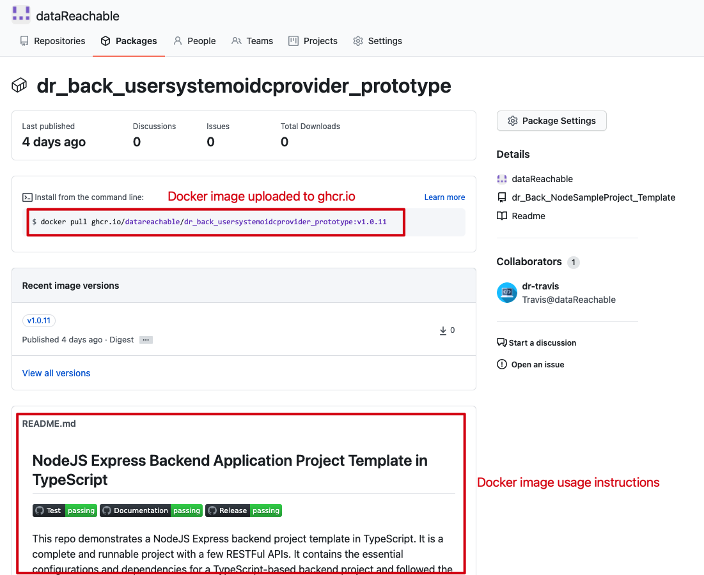
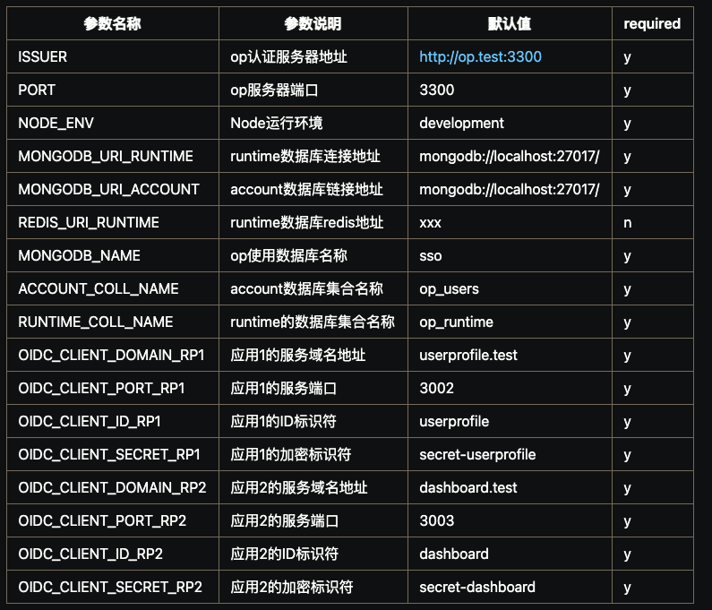

交付规范
后端应用开发程序员应该遵循GitOps工作流程来跟DevOps团队合作。简要的说，最终交付的工作需要包含如下项目：
- (必需) 构建好的Docker镜像，并且已经发布在GitHub Packages(ghcr.io)上；
- (必需) 附在Docker镜像上的交付README.md文档。(在ghcr.io中，此文档与GitHub代码仓库中的根README.md文档一致)。此文档需要包含如何启动、使用、配置交付的项目，比如，必需的环境变量及其作用。
- (必需) GitHub仓库根目录里的README.md文件。参考Readme书写规范。
- (如果要求) 开会演示、汇报成果。
- (如果有) OpenAPI 格式的Restful API文档，并提交到公司的文档服务器上。其中，应当详细描述Restful API的响应码的含义。对应的
index.html和swagger.yaml文件应当上传到GitHub相应的代码仓库的api_doc文件夹下。（你不需要担心上传到公司文档服务器的问题） - (如果有) 公司自开发的库的相关文档（API，类型，接口等），并提交到公司的文档服务器上。（需提交HTML格式文件）
- (如果有) 设计相关文档 (比如，UML 类图，序列图，工作流图，数据流图等) 需放在相应的SharePoint项目中的Office OneNote中的相应位置。
- (如果有) 其他文档 (比如，有用的小贴士，资源，建议等) 并提交到公司的文档服务器上。（需提交HTML或者Markdown格式的文件）
备注： 上述第1，2，3点是一般项目都必需的。对于Restful API开发项目，第五点是必需的。
Docker镜像的构建规范
提交的Docker镜像应当仅仅包含应用所需的最小依赖，以减少Docker镜像的体积。具体的说，对于NodeJS应用，使用
npm install --only=prod来保证仅仅安装了生产环境所需的package.json中的dependencies部分。基础的Docker镜像，我们推荐使用
node:lts-slim生产环境代码需要通过
Babel转译成目标NodeJS版本，并压缩。推荐使用多阶段Docker镜像构建以减小最终生成的镜像体积。
使用
ENTRYPOINT来启动应用，CMD来添加附加的参数。注意，应当使用node命令直接运行应用，而不要使用npm，所有的输出日志需要被导出到标准输出上。
任务提交示例
GitHub上的源代码，README.md文档，和GHCR上的Docker镜像
你需要遵循代码检查过程来提交代码，并由你的直属主管完成代码检查。

上传到ghcr.io上的Docker镜像，和镜像使用说明文档
Docker镜像中需要的环境变量的描述
演示可以是视频，gif图，或者开会展示

项目文档在SharePoint中的位置
这个OneNote笔记包含了一个具体项目的UI/UX的设计，用例，数据库设计，UML图，以及其他的设计文档。该OneNote笔记中会包含一个
Backend的部分，用于存放项目中后端部分的设计相关文档和内部交流讨论内容。
OpenAPI 格式的 Restful API 文档
由于文档服务器目前仅有专门的管理员负责管理，开发人员需要完成如下任务：
- 提交OpenAPI格式的文件（一个
index.html和一个swagger.yaml文件）到项目的GitHub仓库中 - 通知你的直属主管，你已经完成了OpenAPI文档编写（如果你的主管暂时联系不到，请联系 frank.su@datareachable.com）
- 通知主管后，请等待你的主管给你返回你的OpenAPI的线上版本URL链接
- 你收到这个URL链接后，你必须把每个API的URL链接附加到API需求文档上
具体项目的返回响应码（
code域）及其详细描述应该写入OpenAPI文档中。细节请参考：响应体格式。 OpenAPI 文档在GitHub仓库中的提交位置
OpenAPI 文档在GitHub仓库中的提交位置 附加到RESTful API需求表格的OpenAPI文档链接
附加到RESTful API需求表格的OpenAPI文档链接一个OpenAPI文档的例子。
查看OpenAPI格式的文档效果，可以使用下列方法中的任意一种：
- 把你的YAML文件粘贴到swagger编辑器中来查看输出的HTML文件效果
- 安装
redoc-cli，然后启动一个本地的服务器，通过本地浏览器来查看输出效果 - 把OpenAPI的规范文件通过
redoc-cli打包成零依赖的HTML文件，然后使用本地浏览器访问打包后的文件
注意：直接在本地浏览器无法查看
index.html文件，因为ReDoc有一些路径处理上的issues。对于其他的OpenAPI相关的工具，比如，图形界面编辑器，参考工具。
- 提交OpenAPI格式的文件（一个
设计文档应该上传到项目的OneNote中

几个设计图的例子，请参考这里。
其他文档（如果有）也要上传到项目OneNote或SharePoint中。